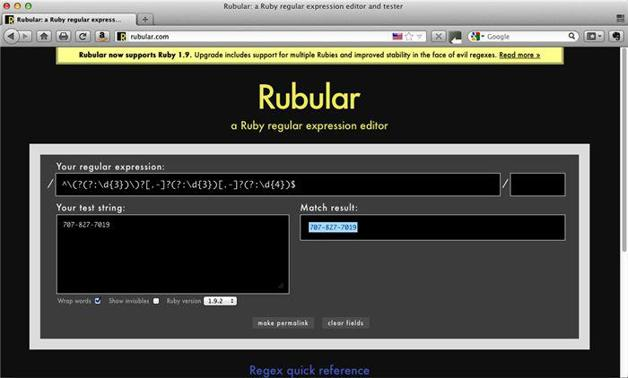

10.2 工具、实现程序以及程序库
本书已经展示了很多工具、实现程序以及程序库。在此我们再回顾一下，并了解几个新的。
10.2.1 Perl
Perl是一个流行的通用编程语言。在通过正则表达式处理文本时，很多人更喜欢使用Perl语言，而不是其他语言。你可能已经安装了Perl，但我们还是得提一下，要获取有关如何在系统中安装Perl的信息，请访问http://www.perl.org/get.html。请到http://perldoc.perl.org/perlre.html阅读有关Perl的正则表达式的内容。当然，不要误解，我的意思并非是让大家都来学习Perl。在其他很多语言中同样可以用正则表达式出色地完成任务，但有必要在你的工具箱中保留Perl。要深入学习Perl，你可以买一本Randal Schwartz、brian d foy和Tom Phoenix合著的Learning Perl, Sixth Edition1 ，该书也是由O'Reilly出版的。
1中文版《Perl语言入门（第6版）》已由东南大学出版社出版（2012）。——编者注
10.2.2 PCRE
PCRE（Perl Compatible Regular ExpressionPerl，Perl兼容正则表达式）是一个用C语言编写的（8位和16位）的正则表达式库，参见http://www.pcre.org。该程序库主要包含一些函数，它们可以在任何C语言框架以及任何可使用C程序库的其他语言中被调用。从名字可以看出，它兼容Perl 5正则表达式，而且包含其他正则表达式实现程序的一些特性。Notepad++编辑器就使用了PCRE库。
pcregrep是一个类似grep的8位工具程序，它可以让你在命令行中使用PCRE的特性。我们在第3章中使用过这个工具。关于下载信息请参见http://www.pcre.org。可通过Macports（http://www.macports.org）获取Mac版的pcregrep，运行命令sudo port install pcre即可（必须预先安装Xcode；见https://developer.apple.com/technologies/tools/，需要注册）。要在Windows平台（二进制文件）上安装pcregrep，请参考http://gnuwin32.sourceforge.net/packages/pcre.htm。
10.2.3 Ruby（Oniguruma）
Oniguruma是Ruby 1.9内置的正则表达式库（参见http://oniguruma.rubyforge.org/）。它是用C语言编写的，专门支持Ruby。可以用Rubular测试Ruby正则表达式，这个在线应用程序支持版本1.8.7和版本1.9.2（见http://www.rubular.com和图10-1）。顺便说一句，TextMate就使用了Oniguruma库。

图10-1 用Rubular匹配电话号码的正则表达式
10.2.4 Python
Python是一种支持正则表达式的通用编程语言（参见http://www.python.org），由Guido van Rossum于1991年开发。可以在以下链接阅读有关Python 3正则表达式的内容：http://docs.python.org/py3k/library/re.html?highlight=regular%20expressions。
10.2.5 RE2
RE2是个非回溯的C++正则表达式库（http://code.google.com/p/re2）。虽然RE2的速度很快，但是它不做回溯操作和后向引用。它是以Perl的CPAN包的形式来使用的，后向引用要依赖Perl的本地程序库来完成。关于API的内容，请参见http://code.google.com/p/re2/wiki/CplusplusAPI。http://swtch.com/~rsc/regexp/regexp3.html上这个题为“Regular Expression Matching in the Wild”的文章非常有趣，大家可以读读。